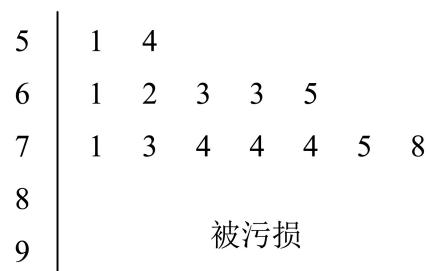

填空题
按本区原卷题号顺序排列。
虹口 · 第1题 ★☆☆☆☆ · 教师预估
已知集合 A={x∣∣x∣<2},B={1,2,3} ，则A ∩ B =
考点：集合交集。
难度依据：涉及集合交集；难度为教师预估，需结合原题条件复核。
核查说明：依据现有底稿归类，尚未逐页校卷、公式校净或独立数学终审。
展开答案与解析
虹口 · 第2题 ★★☆☆☆ · 教师预估
函数 y=lnx−1x 的定义域是
考点：对数真数条件与分式不等式。
难度依据：涉及对数真数条件与分式不等式；难度为教师预估，需结合原题条件复核。
核查说明：依据现有底稿归类，尚未逐页校卷、公式校净或独立数学终审。
展开答案与解析
虹口 · 第3题 ★☆☆☆☆ · 教师预估
本题资料或解析有待核事项，预览不可作为已审定成品。
若tan α = 5，则tan 2α =
考点：正切二倍角。
难度依据：涉及正切二倍角；难度为教师预估，需结合原题条件复核。
核查说明：解析推导得负五分之十二，但末尾答案文字识别损坏为5和12，须回源。；依据现有底稿归类，尚未逐页校卷、公式校净或独立数学终审。
展开答案与解析
虹口 · 第4题 ★☆☆☆☆ · 教师预估
在(x−2)6的二项展开式中， x3 项的系数为
考点：二项展开系数。
难度依据：涉及二项展开系数；难度为教师预估，需结合原题条件复核。
核查说明：依据现有底稿归类，尚未逐页校卷、公式校净或独立数学终审。
展开答案与解析
虹口 · 第5题 ★☆☆☆☆ · 教师预估
设a > 0且 .a=1 ，则函数 {y=2+loga x的图像恒过的定点坐标为
考点：对数函数图像定点。
难度依据：涉及对数函数图像定点；难度为教师预估，需结合原题条件复核。
核查说明：依据现有底稿归类，尚未逐页校卷、公式校净或独立数学终审。
展开答案与解析
虹口 · 第6题 ★☆☆☆☆ · 教师预估
若某圆锥的底面半径为1，高为1，则该圆锥的侧面积为 ．（结果保留π）
考点：圆锥侧面积。
难度依据：涉及圆锥侧面积；难度为教师预估，需结合原题条件复核。
核查说明：依据现有底稿归类，尚未逐页校卷、公式校净或独立数学终审。
展开答案与解析
虹口 · 第7题 ★★☆☆☆ · 教师预估
本题资料或解析有待核事项，预览不可作为已审定成品。
已知非零复数z满足|z − 1| = 1,|–z − i| = 1，则z的虚部为
考点：共轭复数模与几何轨迹。
难度依据：涉及共轭复数模与几何轨迹；难度为教师预估，需结合原题条件复核。
核查说明：原解先设实部、虚部均非零，是否允许此假设需核验。；依据现有底稿归类，尚未逐页校卷、公式校净或独立数学终审。
展开答案与解析
虹口 · 第8题 ★★★☆☆ · 教师预估
本题资料或解析有待核事项，预览不可作为已审定成品。
已知f(x)={x2−x,f(−x),x≥0,x<0,则f(x)≤6的解集是____。
考点：分段函数奇偶性与不等式。
难度依据：涉及分段函数奇偶性与不等式；难度为教师预估，需结合原题条件复核。
核查说明：题干缺分段或奇偶条件，须回源。；依据现有底稿归类，尚未逐页校卷、公式校净或独立数学终审。
展开答案与解析
虹口 · 第9题 ★★★☆☆ · 教师预估
如图，已知正三角形ABC和正方形BCDE的边长均为2，且二面角 A−BC−D 的大小为 6π ，则AC.BD=

考点：二面角与空间向量数量积。
难度依据：涉及二面角与空间向量数量积；难度为教师预估，需结合原题条件复核。
核查说明：依据现有底稿归类，尚未逐页校卷、公式校净或独立数学终审。
展开答案与解析

虹口 · 第10题 ★★★☆☆ · 教师预估
本题资料或解析有待核事项，预览不可作为已审定成品。
双 曲 线 C1:a2x2−b2y2=1 的 左 、 右 焦 点 分 别 为 F1 和 F2 ， 若 以 点 F2 为 焦 点 的 抛 物 线C2:y2=2px(p>0)→^C1 在第一象限交于点P，且 ∠PF1F2=4π ，则 C1 的离心率为
考点：双曲线与抛物线定义、焦点三角形及离心率。
难度依据：需要联系两条圆锥曲线的焦点性质和余弦定理，教师预估。
核查说明：题干连接抛物线与双曲线的文字识别缺损；解析需依照题图回源核对。；依据现有底稿归类，尚未逐页校卷、公式校净或独立数学终审。
展开答案与解析

虹口 · 第11题 ★★☆☆☆ · 教师预估
2024年10月30日“神舟十九号”载人飞船发射成功，标志着中国空间站建设进入新阶段．在飞船竖直升空过程中，某位记者用照相机在同一位置以同一姿势连续拍照两次．已知“神舟十九号”飞船船体实际长度为H，且在照片上飞船船体长度为h，比较两张照片，相对于照片中的同一固定参照物飞船上升了m．假设该记者连按拍照键间的反应时间为t，并忽略相机曝光时长，若用平均速度估算瞬时速度，则拍照时飞船的瞬时速度为 ．（用含有H、h、m、t的式子表示）
考点：比例尺与平均速度建模。
难度依据：涉及比例尺与平均速度建模；难度为教师预估，需结合原题条件复核。
核查说明：依据现有底稿归类，尚未逐页校卷、公式校净或独立数学终审。
展开答案与解析
虹口 · 第12题 ★★★☆☆ · 教师预估
本题资料或解析有待核事项，预览不可作为已审定成品。
已知项数为10的数列 {an} 中任一项均为集合 {x∣1≤x≤10,x∈N} 中的元素，且相邻两项满足an<an+1+3,n=1,2,⋯,9. ．若 {an} 中任意两项都不相等，则满足条件的数列 {an} 有 个
考点：整数排列与相邻限制计数。
难度依据：涉及整数排列与相邻限制计数；难度为教师预估，需结合原题条件复核。
核查说明：原解插入计数结尾乘数识别成问号，需核原文。；依据现有底稿归类，尚未逐页校卷、公式校净或独立数学终审。
展开答案与解析
选择题
按本区原卷题号顺序排列。
虹口 · 第13题 ★★☆☆☆ · 教师预估
本题资料或解析有待核事项，预览不可作为已审定成品。
已知 α∈(0,π)，则“sin(π−α)=21”是“cosα=23”的（ ）条件。
A. 充要
B. 充分非必要
C. 必要非充分
D. 既非充分又非必要
考点：三角诱导公式与充要条件。
难度依据：涉及三角诱导公式与充要条件；难度为教师预估，需结合原题条件复核。
核查说明：题干及A选项可能在题图中，需核题图及原卷。；依据现有底稿归类，尚未逐页校卷、公式校净或独立数学终审。
展开答案与解析
虹口 · 第14题 ★★☆☆☆ · 教师预估
本题资料或解析有待核事项，预览不可作为已审定成品。
已知事件A和事件B满足A∩B = ∅，则下列说法正确的是（ ）
A. 事件A和事件B独立
B. 事件A和事件B互斥
C. 事件A和事件B对立
D. 事件A和事件B互斥
考点：互斥、独立与对立事件。
难度依据：涉及互斥、独立与对立事件；难度为教师预估，需结合原题条件复核。
核查说明：选项B、D识别相同，须回源核对。；依据现有底稿归类，尚未逐页校卷、公式校净或独立数学终审。
展开答案与解析
虹口 · 第15题 ★★★☆☆ · 教师预估
本题资料或解析有待核事项，预览不可作为已审定成品。
已知边长为2的正四面体A−BCD的内切球（球面与四面体四个面都相切的球）的球心为O，若空间中的动点P满足 OP=xOC+yOB+zOD,x,y,z∈[0,1] ]，则点P的轨迹所形成的几何体的体积为（ ）
A. 2
B. 32
C. 23
D. 33
考点：空间向量与平行六面体体积。
难度依据：涉及空间向量与平行六面体体积；难度为教师预估，需结合原题条件复核。
核查说明：仅修复所列OCR公式及其定界符错位；原解数学疑点和其他可渲染错识未因此消除。；依据现有底稿归类，尚未逐页校卷、公式校净或独立数学终审。
展开答案与解析

虹口 · 第16题 ★★★★☆ · 教师预估
本题资料或解析有待核事项，预览不可作为已审定成品。
设数列 {an} 的前四项分别为 a1, a2, a3, a4 ，对于以下两个命题，说法正确的是（ ）
①存在等比数列 {an} 以及锐角α，使 {sinα,cosα,tanα}={a1,a2,a3} 成立
②对任意等差数列 {an} 以及锐角α，均不能使 {sinα,cosα,tanα,cotα}={a1,a2,a3,a4} 成立
A. ①是真命题，②是真命题
B. ①是真命题，②是假命题
C. ①是假命题，②是真命题
D. ①是假命题，②是假命题
考点：等差等比数列与三角函数命题。
难度依据：涉及等差等比数列与三角函数命题；难度为教师预估，需结合原题条件复核。
核查说明：第②命题解答对α=π/4的集合重复元素及排序论证较简略，需复核；末段区间及最大值公式识别损坏。；依据现有底稿归类，尚未逐页校卷、公式校净或独立数学终审。
展开答案与解析

解答题
按本区原卷题号顺序排列。
虹口 · 第17题 ★★★☆☆ · 教师预估
设 f(x)=sinωx(ω>0)
(1) (6分)当函数 ⋅y=f(x) 的最小正周期为2π时，求 y˙=f(x)+cos x在 [0,2π] 上的最大值；
(2) (8分)若ω = 2，且在 △ABC♯ ，角A、B、C所对的边长为a、b、c，锐角A满足
f(A+6π)=0,AB⋅AC=4 ，求a的最小值
考点：（1）辅助角公式与最值；（2）定角数量积和边长下界。
难度依据：涉及（1）辅助角公式与最值；（2）定角数量积和边长下界；难度为教师预估，需结合原题条件复核。
核查说明：依据现有底稿归类，尚未逐页校卷、公式校净或独立数学终审。
展开答案与解析
虹口 · 第18题 ★★★☆☆ · 教师预估
如图，已知在四棱柱 ABCD−EFGH 中，EA⊥平面ABCD，N、M分别是EF、HD的中点

(1) (6分)求证： HN// 平面AFM；
(2) (8分)若底面ABCD为梯形， AB//CD,AB=EA=2,AD=DC=1 ，异面直线AB与EH所 成角为 2π ．求直线 ANI 与平面AFM所成角的正弦值
考点：（1）中点构造平行；（2）空间坐标求线面角。
难度依据：涉及（1）中点构造平行；（2）空间坐标求线面角；难度为教师预估，需结合原题条件复核。
核查说明：依据现有底稿归类，尚未逐页校卷、公式校净或独立数学终审。
展开答案与解析


虹口 · 第19题 ★★★☆☆ · 教师预估
本题资料或解析有待核事项，预览不可作为已审定成品。
2024年法国奥运会落下帷幕．某平台为了解观众对本次奥运会的满意度，随机调查了本市1000名观众 ， 得 到 他 们 对 本 届 奥 运 会 的 满 意 度 评 分 （ 满 分 100 分 ）， 平 台 将 评 分 分 为[50, 60)、 [60, 70)、 [70, 80)、 [80, 90)、 [90, 100]共5层，绘制成频率分布直方图（如图1所示）．并在这些评分中以分层抽样的方式从这5层中再抽取了共20名观众的评分，绘制成茎叶图，但由于某种原因茎叶图受到了污损，可见部分信息如图2所示

图1

图2
(1) (4分)求图2中这20名观众的满意度评分的第35百分位数；
(2) (4分)若从图2中的20名观众中再任选取3人做深度采访，求其中至少有1名观众的评分大于等于90分的概率；
(3) (6分)已知这1000名观众的评分位于[50, 80)上的均值为67，方差为64.7，位于[50, 100]上的均值为73，方差为134.6，求这1000名观众的评分位于[80, 100]上的均值与方差
考点：（1）茎叶图与百分位数；（2）组合概率；（3）合并方差。
难度依据：涉及（1）茎叶图与百分位数；（2）组合概率；（3）合并方差；难度为教师预估，需结合原题条件复核。
核查说明：第（1）问解析中平均数误识为平方数。；依据现有底稿归类，尚未逐页校卷、公式校净或独立数学终审。
展开答案与解析
虹口 · 第20题 ★★★★☆ · 教师预估
本题资料或解析有待核事项，预览不可作为已审定成品。
已知椭圆Γ: 4x2+y2=1 1的左、右焦点分别为 F1,F2 ，右顶点为A，上顶点为B，设P为Γ上的一点(1) (4分)当 PF1⊥F1F2 时，求 ∣PF2 |的值；
(2) (6分)若P点坐标为 (1,23) ，则在Γ上是否存在点Q使 △APQ 的面积为 23+1 ，若存在，请求出所有满足条件的点Q的坐标；若不存在，请说明理由；
(3) (8分)已知D点坐标为(0,m)，过点P和点D的直线l与椭圆Γ交于另一点T，当直线l与x轴和y轴 均不平行时，有 PT⋅(BP+BT)=0 ，求实数m的取值范围
考点：（1）椭圆焦点；（2）定面积与交点；（3）数量积与中点参数范围。
难度依据：涉及（1）椭圆焦点；（2）定面积与交点；（3）数量积与中点参数范围；难度为教师预估，需结合原题条件复核。
核查说明：第（2）问平行线距离公式中的符号与随后解出的q不一致，须回源核对。；依据现有底稿归类，尚未逐页校卷、公式校净或独立数学终审。
展开答案与解析


虹口 · 第21题 ★★★★★ · 教师预估
设 a∈R,Fa(x)=x−af(x)−f(a),x∈(a−1,a)∪(a,a+1) ．若函数 y=f(x) 满足 Fa(x)>0 恒成 立，则称函数y = f (x)具有性质P (a)
(1) (4分)判断y = sinx是否具有性质P(0)，并说明理由；
(2) (6分)设 f(x)=ex−x ，若函数 ⋅y=f(x) 具有性质 P(a) ，求实数a的取值范围；
(3) (8分)设函数y = f(x)的定义域为R，且对任意 a˙∈R 以及 t∈(0,1) )，都有
Fa(a−t)<Fa(a+t) ．若当x < 0时，恒有 f(x)<0 ．求证：函数 y=f(x) 对任意实数a均具有性质P (a)
考点：（1）差商新性质；（2）指数函数差商与参数；（3）差商比较证明。
难度依据：涉及（1）差商新性质；（2）指数函数差商与参数；（3）差商比较证明；难度为教师预估，需结合原题条件复核。
核查说明：依据现有底稿归类，尚未逐页校卷、公式校净或独立数学终审。
展开答案与解析